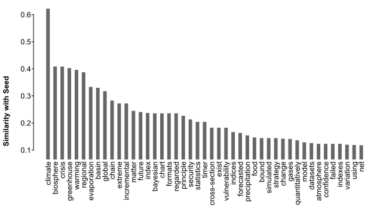
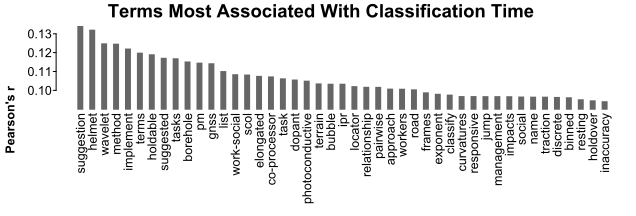
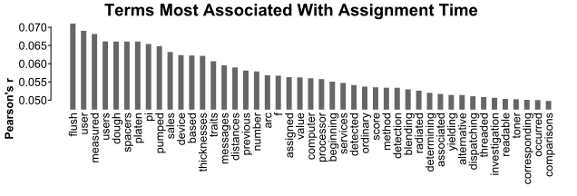
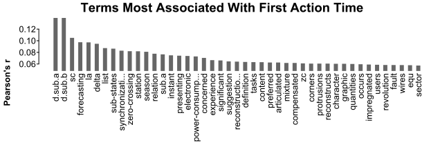
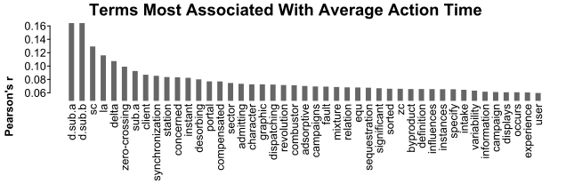
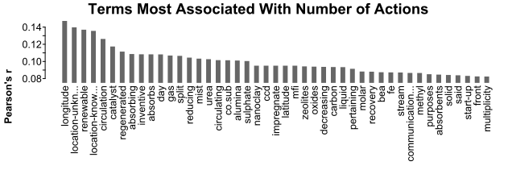

Expand from a Seed Set
example-seed_expand.RmdBuilt with R 4.2.1
This example looks at a set of patent applications based on an initial seed set.
Data Collection
Setup
Before starting, we’ll need to load the package, and point to a directory where we’d like things saved:
# install if needed: remotes::install_guthub("uva-bi-sdad/uspto")
library(uspto)
outDir <- "eda/seed_expand/"Initial Search
We’ll start by identifying a small set of applications with a meteorology Cooperative Patent Classification (CPC) class, and that mention “global warming” or “climate change” in their abstracts:
seed_set <- uspto_search(
'g01w.cpcl. AND ("global warming".ab. "climate change".ab.)',
"US-PGPUB",
outFile = paste0(outDir, "seed_set.csv")
)This gives us 9 applications from between 2012-05-17 and 2022-06-09.
Examination Expansions
For some context around the examination of these applications, we’ll want to collect all of the other applications examined by the examiners of the initial set. Examiners are not included in applications, so we’ll need to identify them by the office actions associated with the applications.
Seed Office Actions
First, we need to know which examiners examined the seed set of applications:
office_actions <- download_office_actions(
paste0("patentApplicationNumber:(", paste(
sub("/", "", seed_set$applicationNumber, fixed = TRUE),
collapse = " "
), ")"),
paste0(outDir, "seed_set_office_actions.json.xz"),
verbose = FALSE
)From these 14 office actions, we can get a set of examiners:
examiners_ids <- unique(vapply(office_actions, function(oa) trimws(oa$examinerEmployeeNumber[[1]]), ""))And now we have 6 examiners who examined at least one application in our seed set.
Examiner-Based Expansion
Next, we want to collect all of the other applications our identified examiners examined. Again, since examiners are not directly associated with applications, we’ll have to first collect all of their office actions:
all_office_actions <- download_office_actions(
paste0("examinerEmployeeNumber:(", paste(examiners_ids, collapse = " "), ")"),
paste0(outDir, "all_office_actions.json.xz"),
verbose = FALSE
)
all_applications <- unique(vapply(all_office_actions, function(oa) oa$patentApplicationNumber[[1]], ""))This gives us 3201 total applications.
Collect Application Data
There are at least three sources of information that might be of interest when considering the examination of a patent application: One we have in office actions, another similar to those are the full prosecution histories, and finally, the text of the applications themselves.
Prosecution Histories
Prosecution histories track when happens to an application between the submitter and the patent office. These are recorded in the Patent Examination Data System (PEDS):
library(jsonlite)
examinations_file <- paste0(outDir, "examination_records.json.xz")
if (file.exists(examinations_file)) {
examination_records <- read_json(examinations_file)
} else {
# have to break up the calls based on some limit on query length theoretically
n <- length(all_applications)
filters <- lapply(
split(sub("/", "", all_applications, fixed = TRUE), sort(rep_len(seq_len(ceiling(n / 750)), n))),
function(set) paste0("applId:(", paste(set, collapse = " "), ")")
)
examination_records <- unlist(lapply(filters, function(f) {
download_peds(filters = list(f), verbose = FALSE)
}), FALSE, FALSE)
con <- xzfile(examinations_file)
write_json(examination_records, con, auto_unbox = TRUE)
close(con)
}Application Text
Finally, we can collect the actual content of each application, based on the document IDs included in the examination records:
document_ids <- unique(unlist(lapply(examination_records, function(r) {
r$patentCaseMetadata$patentPublicationIdentification$publicationNumber
})))
oriDir <- "eda/original/"
if (!dir.exists(oriDir)) oriDir <- "../eda/original/"
applications <- uspto_download(document_ids, outDir = paste0(oriDir, "applications"))Analysis
We can start with a simple look at the text to get a feel for what sets our seed set apart:
# identify the applications that were part of the initial seed set
applications$seed <- applications$applicationNumber %in% seed_set$applicationNumber
# count up terms used within abstracts
library(lingmatch)
dtm <- lma_dtm(applications$abstractHtml, "function", dc.min = 2)
# identify the terms that most identify the seed set
term_seed_sim <- lma_simets(t(dtm), applications$seed, metric = "cosine")
term_seed_sim <- sort(term_seed_sim, TRUE)[1:45]
library(splot)
splot(
term_seed_sim ~ names(term_seed_sim),
type = "bar", sort = FALSE, title = FALSE, labx = FALSE, laby = "Similarity with Seed"
)
Examination Timing
Of more interest might be how long aspects of examination takes, and what features of the application might be associated with that time.
We can extract timing from the examination records:
examination_timing <- do.call(rbind, lapply(examination_records, function(r) {
times <- extract_event_timing(r$prosecutionHistoryDataBag$prosecutionHistoryData)
data.frame(
Classification_Time = if (!is.null(times[[1]])) times[[1]]$days[[1]] else NA,
Assignment_Time = if (!is.null(times[[2]])) times[[2]]$days[[1]] else NA,
First_Action_Time = if (!is.null(times[[3]])) times[[3]]$days[[1]] else NA,
Average_Action_Time = if (!is.null(times[[3]])) mean(times[[3]]$days) else NA,
Number_of_Actions = if (!is.null(times[[3]])) nrow(times[[3]]) else 0,
row.names = paste0(
substring(r$patentCaseMetadata$applicationNumberText$value, 1, 2),
"/",
substring(r$patentCaseMetadata$applicationNumberText$value, 3)
)
)
}))
examination_timing <- examination_timing[applications$applicationNumber, ]
# look at only applications with extracted times
has_timings <- which(!is.na(examination_timing$First_Action_Time))
examination_timing <- examination_timing[has_timings, ]Then look at the relationship between timings and actions:
cors <- lma_simets(t(examination_timing), metric = "pearson")
colnames(cors) <- seq_len(ncol(cors))
rownames(cors) <- paste0("(", colnames(cors), ") ", rownames(cors))
round(cors, 3)
#> 5 x 5 sparse Matrix of class "dtCMatrix" (unitriangular)
#> 1 2 3 4 5
#> (1) Classification_Time I . . . .
#> (2) Assignment_Time 0.187 I . . .
#> (3) First_Action_Time 0.151 0.161 I . .
#> (4) Average_Action_Time 0.138 0.156 0.855 I .
#> (5) Number_of_Actions 0.141 -0.001 0.156 0.044 IOr associate timing and number of actions with terms used in the application’s abstract:
# align applications with valid timings
term_time_sim <- lma_simets(t(dtm[has_timings, ]), t(examination_timing), metric = "pearson")
for (aspect in colnames(term_time_sim)) {
terms <- term_time_sim[, aspect]
terms <- sort(terms, TRUE)[1:45]
splot(
terms ~ names(terms),
title = paste0("Terms Most Associated With ", gsub("_", " ", aspect, fixed = TRUE)),
type = "bar", sort = FALSE, laby = "Pearson's r", labx = FALSE
)
}
Art Unit Topics
We can also get a feel for what seems to characterize Group Art Units by extracting topics from the applications they review.
We can start by getting art unit information for each application:
artunits <- unlist(lapply(examination_records, function(r) {
res <- r$patentCaseMetadata$groupArtUnitNumber$value
names(res) <- sub("(\\d{2})", "\\1/", r$patentCaseMetadata$applicationNumberText$value, perl = TRUE)
res
}))[applications$applicationNumber]
# number of applications assigned to each art unit
table(artunits)
#> artunits
#> 1734 2852 2857 2863 2864 2865 3623
#> 533 808 500 24 844 274 133Then, we could get the same sort of associated set of terms, as with the seed set:
gaus <- unique(artunits)
term_artunit <- lma_simets(
t(dtm), vapply(artunits, "==", logical(length(gaus)), gaus),
metric = "pearson"
)
colnames(term_artunit) <- gaus
# look at top 10 terms for each
get_top_terms <- function(loadings, n = 10) {
kable(as.data.frame(vapply(colnames(loadings), function(col) {
rownames(loadings)[order(loadings[, col], decreasing = TRUE)[seq_len(n)]]
}, character(n))))
}
get_top_terms(term_artunit)| 2865 | 2857 | 3623 | 2852 | 1734 | 2863 | 2864 |
|---|---|---|---|---|---|---|
| line | system | business | image | gas | sun | data |
| corners | malfunction | user | member | stream | tentative | motion |
| reconstructs | transformed | users | forming | catalyst | tolerances | values |
| reserves | set | sales | toner | dioxide | closure | sensors |
| protrusions | reference | actions | developing | carbon | golden | based |
| imparted | runtime | customer | developer | containing | radiations | associated |
| constrained | boosted | service | direction | oxidation | sub-assembly | determining |
| leakage | build-up | task | formed | hydrogen | aims | signals |
| differential | centrifugal | score | portion | exhaust | varies | signal |
| prompting | incipient | scheduling | apparatus | removal | uncorrected | monitoring |
# we could use this to roughly predict art unit in-sample:
predicted_art_unit <- gaus[max.col(dtm %*% term_artunit)]
round(table(artunits, predicted_art_unit) / as.numeric(table(artunits)), 4)
#> predicted_art_unit
#> artunits 1734 2852 2857 2863 2864 2865 3623
#> 1734 0.9962 0.0019 0.0000 0.0000 0.0000 0.0000 0.0019
#> 2852 0.0062 0.6349 0.0594 0.0000 0.2450 0.0223 0.0322
#> 2857 0.0060 0.0320 0.5680 0.0060 0.3540 0.0140 0.0200
#> 2863 0.0000 0.0417 0.0417 0.7917 0.1250 0.0000 0.0000
#> 2864 0.0213 0.0284 0.0249 0.0000 0.8993 0.0095 0.0166
#> 2865 0.0073 0.0255 0.0584 0.0000 0.3212 0.5657 0.0219
#> 3623 0.0000 0.0000 0.0000 0.0000 0.0000 0.0000 1.0000We could also extract general topics from this set of applications, then see how much they are represented in each art unit’s assigned applications:
# weigh terms
wdtm <- lma_weight(dtm, "tf-idf", FALSE)
# get 10 simple topics
## remotes::install_github("miserman/lusilab")
library(lusilab)
loadings <- taffyInf(wdtm, 10)
colnames(loadings) <- paste0("taffy_", seq_len(ncol(loadings)))
scores <- dtm %*% loadings
get_top_terms(loadings)| taffy_1 | taffy_2 | taffy_3 | taffy_4 | taffy_5 | taffy_6 | taffy_7 | taffy_8 | taffy_9 | taffy_10 |
|---|---|---|---|---|---|---|---|---|---|
| b | image | data | gas | signal | battery | information | methods | member | method |
| slidably | forming | collected | stream | frequency | pack | exercise | systems | developer-carrying | determining |
| announcement | toner | acquisition | streams | output | charge | mental | disclosed | insulates | includes |
| sequential | latent | associated | exhaust | synchronous | capacity | wrist | described | bearing | identifying |
| k | forms | structured | acid | delays | voltage | similarity | load-switching | developer | using |
| withdrawn | carrier | interpret | flue | esr | blocks | advice | pc | accommodate | comprises |
| orientation | electrostatic | collector | lean | digital | lifespan | credit | utilize | overlapped | drilling-performance |
| counter-current | recording | collection | p.sub.i | rails | discharging | acquires | answers | image | steps |
| s-selective | transfer | battery-powered | p.sub.o | unmodulated | estimating | schedule | include | developing | calculating |
| physical | member | gas-volume | permeate | modulated | state | action | problems | photosensitive | obtaining |
# compare with kmeans
topics_km <- kmeans(wdtm, 10)
loadings_km <- t(topics_km$centers)
dimnames(loadings_km) <- list(colnames(dtm), paste0("km_", seq_len(ncol(loadings))))
scores_km <- dtm %*% loadings_km
get_top_terms(loadings_km)| km_1 | km_2 | km_3 | km_4 | km_5 | km_6 | km_7 | km_8 | km_9 | km_10 |
|---|---|---|---|---|---|---|---|---|---|
| b | defect | renewable | gas | r.sub | member | mi | data | signal | battery |
| orientation | exercise | positioning | stream | c.sub | image | mrow | system | sensor | charge |
| absorption | torque | mi | dioxide | radical | developer | msub | device | frequency | voltage |
| gas | steering | features | carbon | t.sub | toner | math | plurality | output | capacity |
| liquid | insolation | vortex | co.sub | r.sup | developing | mn | method | signals | state |
| means | sales | d | catalyst | constant | portion | mstyle | power | unit | current |
| co.sub | lead | location-unknown | solution | elastic | unit | mfrac | information | b | soc |
| core | failure-type | longitude | fuel | m.sub | forming | g.sub | sensor | magnetic | energy |
| chamber | information | energy | exhaust | model | transfer | mspace | value | circuit | estimating |
| exhaust | types | day | acid | parameters | belt | g.sub.n | time | phase | secondary |
# compare with NMF
library(RcppML)
topics_nmf <- nmf(wdtm, 10, verbose = FALSE)
loadings_nmf <- t(topics_nmf$h)
dimnames(loadings_nmf) <- list(colnames(dtm), paste0("nmf_", seq_len(ncol(loadings_nmf))))
colnames(topics_nmf$w) <- colnames(loadings_nmf)
get_top_terms(loadings_nmf)| nmf_1 | nmf_2 | nmf_3 | nmf_4 | nmf_5 | nmf_6 | nmf_7 | nmf_8 | nmf_9 | nmf_10 |
|---|---|---|---|---|---|---|---|---|---|
| data | signal | gas | fixing | member | battery | orientation | fuel | b | mi |
| seismic | sensor | stream | body | developer | voltage | core | tank | absorption | mrow |
| unit | frequency | co.sub | portion | image | charge | means | reactant | s | msub |
| model | circuit | dioxide | belt | toner | capacity | signals | source | liquid | math |
| system | output | carbon | rotary | developing | state | physical | catalytic | chamber | mn |
| plurality | power | solution | roller | electrode | current | processed | reactor | co.sub | mfrac |
| information | current | absorbent | surface | supply | soc | master | arranged | processing | mstyle |
| sensor | voltage | absorption | member | transfer | unit | device | inert | discharge | s |
| values | signals | liquid | main | unit | temperature | measure | aircraft | exhaust | g.sub |
| fluid | phase | acid | direction | carrier | charging | memory | inerting | k | coating |
# see how similar topics are in terms of loadings
loadings_all <- cbind(loadings, loadings_km, loadings_nmf)
loading_cors <- lma_simets(t(loadings_all), metric = "pearson")
topic_names <- rownames(loading_cors)
scores_all <- dtm %*% loadings_all
display_matrix <- function(l, threshold = .1) {
v <- as.data.frame(as.matrix(l))
v[abs(v) < threshold] <- 0
kable(v, digits = 3, format.args = list(zero.print = "."))
}
display_matrix(loading_cors[grep("km", topic_names), grep("taffy", topic_names)])| taffy_1 | taffy_2 | taffy_3 | taffy_4 | taffy_5 | taffy_6 | taffy_7 | taffy_8 | taffy_9 | taffy_10 | |
|---|---|---|---|---|---|---|---|---|---|---|
| km_1 | 0.655 | . | . | . | . | . | . | . | . | . |
| km_2 | . | . | . | . | . | . | 0.219 | . | . | . |
| km_3 | . | . | . | . | . | . | . | . | . | . |
| km_4 | 0.158 | . | -0.206 | 0.699 | -0.123 | . | -0.142 | . | . | . |
| km_5 | . | . | . | . | . | . | . | . | . | . |
| km_6 | . | 0.668 | -0.160 | . | . | . | . | -0.178 | 0.677 | -0.259 |
| km_7 | . | . | . | . | . | . | . | . | . | . |
| km_8 | . | . | 0.343 | -0.145 | 0.102 | . | 0.148 | . | -0.132 | 0.189 |
| km_9 | . | . | 0.146 | -0.141 | 0.638 | . | . | . | . | . |
| km_10 | . | . | . | . | . | 0.789 | . | . | . | . |
| taffy_1 | taffy_2 | taffy_3 | taffy_4 | taffy_5 | taffy_6 | taffy_7 | taffy_8 | taffy_9 | taffy_10 | |
|---|---|---|---|---|---|---|---|---|---|---|
| nmf_1 | . | . | 0.580 | -0.190 | . | . | 0.212 | . | -0.193 | 0.239 |
| nmf_2 | . | . | . | -0.137 | 0.693 | . | . | . | . | . |
| nmf_3 | 0.142 | . | -0.191 | 0.684 | -0.122 | . | -0.135 | . | . | . |
| nmf_4 | . | 0.368 | -0.151 | . | . | . | . | -0.155 | 0.382 | -0.183 |
| nmf_5 | . | 0.571 | -0.139 | . | . | . | . | -0.142 | 0.660 | -0.216 |
| nmf_6 | . | . | . | . | . | 0.798 | . | . | . | . |
| nmf_7 | 0.250 | . | . | . | . | . | . | . | . | . |
| nmf_8 | . | . | . | 0.189 | . | . | . | 0.102 | . | . |
| nmf_9 | 0.627 | . | . | . | . | . | . | . | . | . |
| nmf_10 | . | . | . | . | . | . | . | . | . | . |
| km_1 | km_2 | km_3 | km_4 | km_5 | km_6 | km_7 | km_8 | km_9 | km_10 | |
|---|---|---|---|---|---|---|---|---|---|---|
| nmf_1 | . | 0.234 | 0.142 | . | . | . | . | 0.869 | 0.375 | 0.165 |
| nmf_2 | . | . | . | . | . | . | . | 0.444 | 0.905 | 0.167 |
| nmf_3 | . | . | . | 0.936 | 0.137 | . | . | 0.126 | . | . |
| nmf_4 | . | . | 0.186 | . | . | 0.587 | . | 0.232 | 0.109 | . |
| nmf_5 | . | . | . | . | . | 0.913 | . | 0.104 | . | . |
| nmf_6 | . | . | . | . | . | . | . | 0.208 | 0.139 | 0.979 |
| nmf_7 | . | . | . | . | . | . | . | 0.186 | 0.176 | . |
| nmf_8 | . | . | . | 0.352 | . | . | . | . | . | . |
| nmf_9 | 0.996 | . | . | . | . | . | . | . | 0.124 | . |
| nmf_10 | . | . | 0.349 | . | . | . | 0.995 | . | . | . |
Now we can look at trends in these topics over time within art unit:
applications$year <- as.numeric(applications$datePublYear)
trends <- vapply(gaus, function(au) {
su <- artunits == au
lma_simets(t(scores_all[artunits == au, ]), applications[su, "year"], metric = "pearson")
}, numeric(ncol(scores_all)))
display_matrix(t(trends), .1)| taffy_1 | taffy_2 | taffy_3 | taffy_4 | taffy_5 | taffy_6 | taffy_7 | taffy_8 | taffy_9 | taffy_10 | km_1 | km_2 | km_3 | km_4 | km_5 | km_6 | km_7 | km_8 | km_9 | km_10 | nmf_1 | nmf_2 | nmf_3 | nmf_4 | nmf_5 | nmf_6 | nmf_7 | nmf_8 | nmf_9 | nmf_10 | |
|---|---|---|---|---|---|---|---|---|---|---|---|---|---|---|---|---|---|---|---|---|---|---|---|---|---|---|---|---|---|---|
| 2865 | . | . | . | -0.135 | 0.161 | 0.120 | . | . | -0.153 | . | 0.113 | . | . | . | . | . | . | 0.148 | 0.204 | 0.146 | 0.119 | 0.177 | . | . | . | 0.129 | . | . | 0.111 | . |
| 2857 | . | . | 0.111 | . | . | . | . | 0.149 | -0.102 | . | . | . | . | . | . | . | . | . | . | . | 0.125 | . | . | . | . | . | . | . | . | . |
| 3623 | 0.112 | -0.265 | . | . | . | -0.109 | -0.154 | 0.159 | -0.217 | 0.113 | 0.116 | . | 0.197 | 0.191 | 0.187 | . | 0.106 | 0.139 | 0.187 | . | . | 0.133 | 0.139 | . | . | . | . | 0.197 | 0.115 | . |
| 2852 | . | -0.507 | 0.475 | . | 0.279 | 0.290 | 0.277 | 0.420 | -0.425 | 0.494 | . | 0.145 | 0.130 | . | . | -0.478 | 0.136 | 0.344 | 0.243 | 0.252 | 0.378 | 0.231 | . | -0.399 | -0.427 | 0.204 | . | . | . | . |
| 1734 | 0.116 | . | . | . | . | -0.103 | . | . | . | . | 0.119 | . | . | . | . | . | . | . | 0.155 | . | . | 0.116 | . | . | . | . | . | 0.136 | 0.119 | . |
| 2863 | . | -0.287 | . | -0.150 | . | 0.109 | . | 0.213 | -0.207 | 0.271 | -0.124 | -0.162 | . | -0.265 | -0.116 | -0.287 | -0.363 | -0.129 | -0.144 | . | -0.193 | . | -0.386 | -0.319 | -0.256 | -0.132 | 0.219 | 0.141 | -0.301 | -0.309 |
| 2864 | . | -0.154 | 0.221 | . | . | . | . | 0.199 | -0.196 | . | . | . | . | . | 0.115 | . | . | 0.179 | . | . | 0.209 | . | . | . | . | . | . | . | . | . |
focal_unit <- names(which.max(colMeans(abs(trends))))
focal_topics <- names(which(apply(abs(trends), 1, max) > .4))
get_top_terms(loadings_all[, focal_topics])| taffy_2 | taffy_3 | taffy_8 | taffy_9 | taffy_10 | km_6 | nmf_5 |
|---|---|---|---|---|---|---|
| image | data | methods | member | method | member | member |
| forming | collected | systems | developer-carrying | determining | image | developer |
| toner | acquisition | disclosed | insulates | includes | developer | image |
| latent | associated | described | bearing | identifying | toner | toner |
| forms | structured | load-switching | developer | using | developing | developing |
| carrier | interpret | pc | accommodate | comprises | portion | electrode |
| electrostatic | collector | utilize | overlapped | drilling-performance | unit | supply |
| recording | collection | answers | image | steps | forming | transfer |
| transfer | battery-powered | include | developing | calculating | transfer | unit |
| member | gas-volume | problems | photosensitive | obtaining | belt | carrier |
splot(
scores_all[, focal_topics] ~ applications$year,
su = artunits == focal_unit, mv.scale = TRUE, sud = FALSE, myl = c(-2, 9),
title = paste("Topic Over Time in Art Unit", focal_unit),
lines = "spline", laby = "Topic Use (z-scored)", labx = FALSE
)